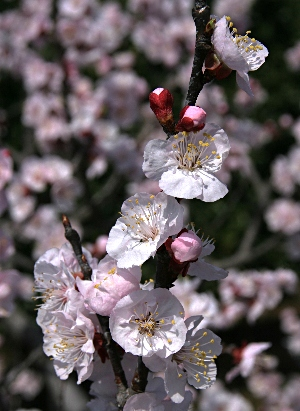

アンズ
基本データ
- 日本名：あんず（杏）
- 科目 ：バラ科
- 学名 ：Prunus armeniaca
| 生息地 | 道端、田畑のあぜ道 | |
| 大きさ | 2～4ｍ | |
| 花の咲く時期 | 3～5月月 | |
| 花の色 | 桃色 | |
| 花びらの枚数・形 | 5枚 |
長野県更埴市の森地区は、日本一のあんずの里として有名。毎年４月中旬に開花し、この時期あんず祭りが開催されます。休日は都会なみの大変な人出でにぎわうため、お勧めは平日

| 生息地 | 道端、田畑のあぜ道 | |
| 大きさ | 2～4ｍ | |
| 花の咲く時期 | 3～5月月 | |
| 花の色 | 桃色 | |
| 花びらの枚数・形 | 5枚 |